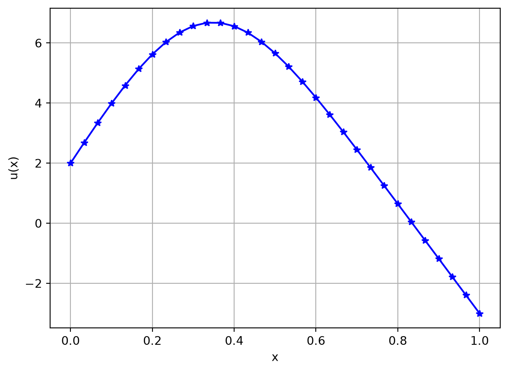
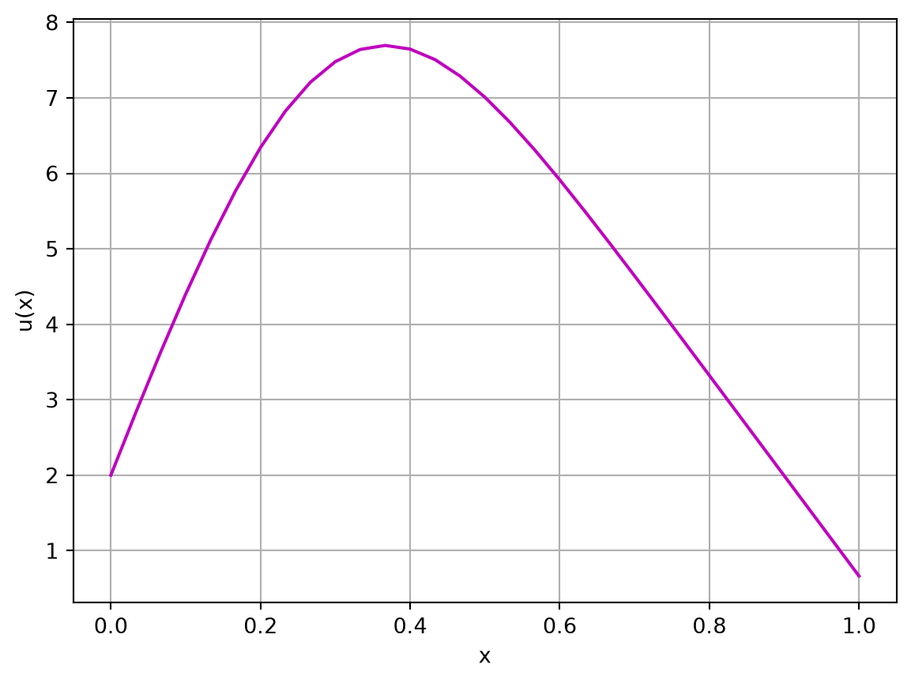
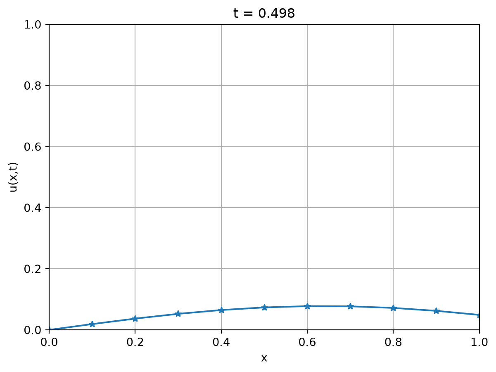
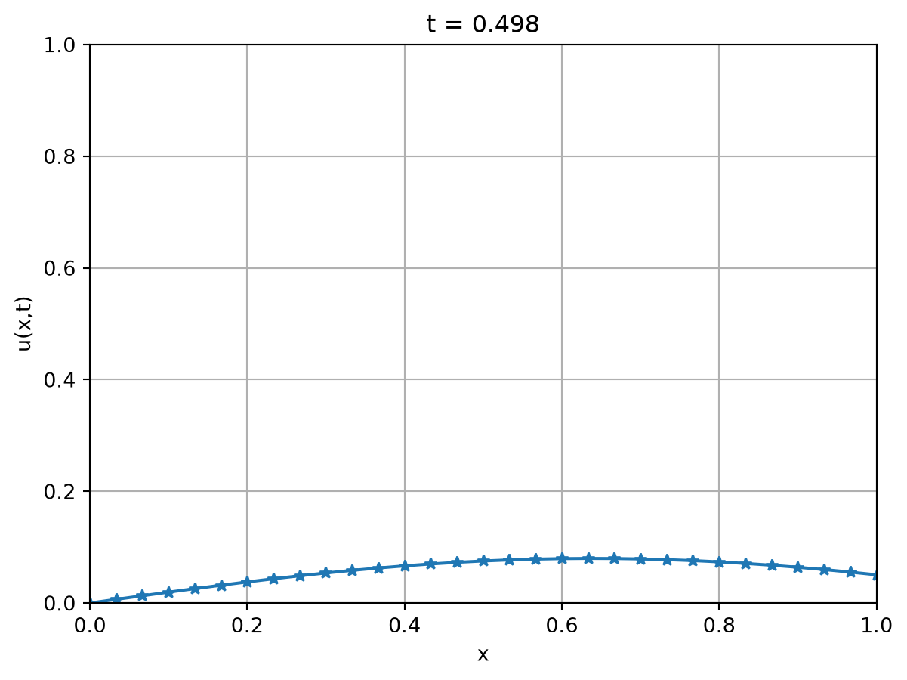
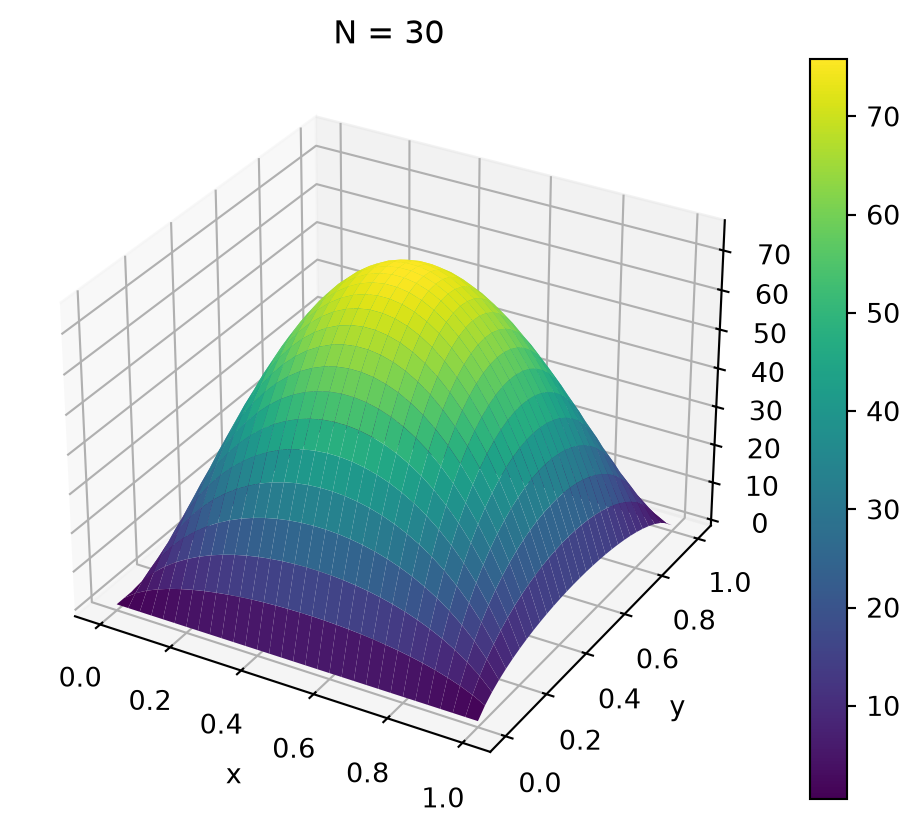

El método de diferencias finitas es un método numérico para calcular soluciones aproximadas de ecuaciones diferenciales. La aproximación puede ser tan buena como se desee. Pero para mayor aproximación hace falta más trabajo computacional.
En este método no se obtiene una fórmula analítica de la solución, sino que se obtienen aproximaciones en muchos puntos del dominio donde se quiere resolver el problema.
La ventaja es que permite resolver problemas con condiciones de borde mucho más generales y con términos fuente también generales. También permite trabajar con coeficientes variables, aunque no nos preocuparemos por eso en este curso.
6.1 Diferencias finitas en 1D
Consideraremos primero la ecuación del calor unidimensional. Es decir, estamos considerando una barra donde todas las cantidades son constantes en los planos paralelos al plano \(yz\), y los cambios o variaciones y el flujo sólo ocurre en la dirección \(x\).
6.1.1 Problema estacionario (Poisson)
Recordemos el problema de difusión en una dimensión \[
c \rho u_t - K_0 u_{xx} = Q, \quad u = u(x,t),\quad 0 \le x \le L,\quad t \ge 0.
\]
Al considerar el estado estacionario en que la variable \(u(x,t)\) no cambia con respecto al tiempo \(t\), tenemos \(u_t = 0\) y obtenemos la ecuación de Poisson \[
- K_0 u_{xx} = Q, \quad u = u(x), \quad 0 \le x \le L.
\]
En la siguiente sección vemos cómo se discretiza el problema de Poisson unidimensional con condiciones de borde de tipo Dirichlet.
Condiciones de borde Dirichlet
Consideremos el problema \[
\begin{cases}
\begin{aligned}
-K_0 u_{xx} &= Q, \quad 0 \le x \le L, \\
u(0) &= a, \\
u(L) &= b.
\end{aligned}
\end{cases}
\tag{6.1}\]
NotaLa idea principal
El método de diferencias finitas consiste en reemplazar derivadas por cocientes de diferencias.
Recordando que \(\frac{dg}{dx} (x) = \lim_{h \to 0} \frac{g(x+h) - g(x)}h\), la idea es tomar \(h\) pequeño y aproximar \(\frac{dg}{dx} (x)\) por \(\frac{g(x+h) - g(x)}h\), o alguna variante:
Las acotaciones del error se obtienen utilizando el Teorema de Taylor. Recordemos que en la ecuación de Poisson aparece \(u_{xx} = \frac{d^2 u}{dx^2}\).
Para derivadas segundas hacemos lo siguiente, utilizando diferencias centradas:
Como \(u^{IV}\) es continua, \(\frac{u^{IV}(\xi_1) + u^{IV}(\xi_2)}{2} = u^{IV}(\eta)\) para algún \(x-h < \eta < x+h\), y luego \[
\frac{u(x+h) - 2 u(x) + u(x-h)}{h^2} = u''(x) + \frac{h^2}{12} u^{IV}(\eta),
\] que implica la afirmación de la proposición.
Proponemos los siguientes ejercicios para comprender estos conceptos relacionados al error de aproximación en las derivadas.
📝 Ejercicio 1
Considere la función \(u(x) = \frac{\text{sen}(x)}{x}\) y \(x_0=1\). Complete la siguiente tabla con las aproximaciones de \(u'(x_0)\) obtenidas utilizando diferencias adelantadas, diferencias atrasadas y diferencias centradas, y sus respectivos errores.
\(h\)
\(\dfrac{u(x_0+h)-u(x_0)}h\)
\(\quad\) error \(\quad\)
\(\dfrac{u(x_0) - u(x_0-h)}h\)
\(\quad\) error \(\quad\)
\(\dfrac{u(x_0+ h) - u(x_0- h)}{2h}\)
\(\quad\) error \(\quad\)
1/10
1/20
1/40
1/80
1/160
1/320
1/640
1/1280
Determine en qué factor se reduce el error de aproximación en cada caso cuando \(h\) se divide a la mitad.
Determine el orden de convergencia de los tres métodos propuestos en términos de \(h\).
Observando la tabla, determine el valor de \(h\) necesario en cada caso para obtener el valor \(u'(x_0)\) con tres dígitos correctos.
Observando la tabla, determine cuántos dígitos correctos de \(u'(x_0)\) se obtienen con cada método usando \(h=1/1280\).
📝 Ejercicio 2
Se tomaron mediciones de la posición de un automóvil en una ruta durante una hora cada cinco minutos, y las mismas se reportan en el archivo posicion_automovil.txt (ver TP6 en el aula virtual). El tiempo está expresado en min y la posición en km.
Determine la velocidad del automóvil en km/h a la media hora y estime la precisión de su cálculo.
¿Cómo cambiaría la calidad de su aproximación si las mediciones se hubieran tomado cada diez minutos?
Determine la velocidad máxima en km/h y en qué momento se da. ¿Cuál es la precisión de su estimación?
Determine la aceleración del automóvil en \(\text{km/h}^2\) a la media hora y estime la precisión de su cálculo.
En vista de la Proposición 6.1, si \(u\) es la solución de (6.1), resulta \[
- K_0 \frac{u(x+h) - 2 u(x) + u(x-h)}{h^2} \approx Q(x),
\]
siempre que \(x-h, x, x+h \in [0,L]\), es decir, si \(h \le x \le L-h\). El error de aproximación en esta fórmula es \(\mathcal{O}(h^2)\).
Para obtener un método numérico, tomamos \(N \in \mathbb{N}\) y \(h = \frac{L}{N}\), y definimos la partición
\[
0 = x_1 < x_2 = h < x_3 = 2h < \dots < x_N = L - h < x_{N+1} = L.
\]
Si observamos que \(x_i - h = x_{i-1}\) y que \(x_i + h = x_{i+1}\), resulta \[
-K_0 \frac{u(x_i+h) - 2 u(x_i) + u(x_i-h)}{h^2} =
-K_0 \frac{u(x_{i+1}) - 2 u(x_i) + u(x_{i-1})}{h^2} \approx Q(x_i)
\]
para \(i = 2, 3, 4, \dots, N\). Además, \(u(x_1) = a\) y \(u(x_{N+1}) = b\).
He aquí una implementación computacional en Python, que consiste en escribir un programa que ensamble el sistema y lo resuelva:
# poissondirichletdf1d.pyimport numpy as npfrom scipy.sparse import spdiagsimport matplotlib.pyplot as plt# Programa para resolver la ecuación de Poisson 1D# con condiciones de Dirichlet en x=0 y x=L.# Método: Diferencias finitas## - K0 u''(x) = Q(x), 0 < x < L# u(0) = a, u(L) = b# Parámetros del problemaL =1.0# Longitud del dominioK0 =1.0# Coeficiente de difusióna =2.0# Condición de Dirichlet en x=0b =-3.0# Condición de Dirichlet en x=LQ =lambda x: 100* np.exp(-20* (x - L/3)**2) # Término fuente# Parámetros del método numéricoN =30# Número de intervalos# Armado de la matrizh = L / N # Tamaño del pasounos = np.ones(N +1) # Vector de unosdiagonales = np.array([-1* unos, 2* unos, -1* unos])matriz = spdiags(diagonales, [-1, 0, 1], N +1, N +1).toarray()matriz[0, :2] = [1, 0]matriz[N, N-1:N+1] = [0, 1]# Armado del lado derechoX = np.linspace(0, L, N +1)F = np.zeros(N +1)F[0] = aF[1:N] = h**2/ K0 * Q(X[1:N])F[N] = b# Resolución del sistemaU = np.linalg.solve(matriz, F)# Graficar la soluciónplt.figure(1)plt.plot(X, U, '*-', color='blue')plt.xlabel('x')plt.ylabel('u(x)')plt.grid(True)plt.show()

Lo que puede demostrarse, a partir del error cometido por la fórmula en diferencias 6.2 es que
AdvertenciaError máximo de diferencias finitas (1D) para el Problema de Poisson
Teorema 6.1 Si la solución exacta \(u(x)\) del Problema de Poisson \[
\begin{cases}
\begin{aligned}
-K_0 u_{xx} &= Q, \quad 0 \le x \le L, \\
u(0) &= a, \\
u(L) &= b.
\end{aligned}
\end{cases}
\]
es \(C^4[0,L]\) entonces \[
\max_{i=1,2,\dots,N+1} | u(x_i) - U_i | \le C M_4 h^2 = C M_4 L^2 \frac{1}{N^2},
\]
donde \(M_4 = \max_{[0,L]} |u^{IV}|\) y \(C\) es una constante que depende de los parámetros \(K_0\), \(L\), de la ecuación, pero es independiente de la función \(Q(x)\), y de los datos de borde \(a\), \(b\) y del parámetro de discretización \(h\) (o \(N\)).
Demostración
La demostración de este teorema queda fuera del alcance de este curso. El lector interesado puede encontrarla en el libro recomendado en la Bibliografía al final de este capítulo.
Observación: Cuando uno escribe un programa como el anterior para resolver un problema, debe verificar que funcione bien. Para ello, se busca una solución exacta. Esto parece difícil, pero es cuestión de elegir una \(u(x)\) cualquiera, que sea \(C^4[0,L]\) aunque no sea muy obvia, como lineal o cuadrática y luego, dado un \(k\) elegido, se calcula \(f(x)\), \(u(0)\) y \(u(L)\).
Por ejemplo: Tomemos \(L=1\), \(K_0=2\) y \(u(x) = x^2 + e^{-(x-0.5)^2}\). Para que esta \(u\) sea solución de 6.1, calculamos \(Q = -K_0 u_{xx}\): \[
u_x(x) = 2x - 2(x-0.5)e^{-(x-0.5)^2}
, \qquad
u_{xx}(x) = 2 - 2[1-2(x-0.5)^2] e^{-(x-0.5)^2}
\]
Luego, resolvemos el problema con \[
\begin{aligned}
Q(x) &= -4+4[1-2(x-0.5)^2] e^{-(x-0.5)^2} & &\bigg(=-K_0 u_{xx}(x) \quad\text{con}\quad K_0=2\bigg) \\
a &= e^{-0.5^2} & &\bigg( =u(0) \bigg) \\
b &= 1 + e^{-0.5^2} & &\bigg( =u(1) \quad\text{con}\quad L=1\bigg)
\end{aligned}
\]
y deberíamos obtener una solución aproximada a \(u(x) = x^2 + e^{-(x-0.5)^2}\).
Para estar seguros que el código está bien programado, debemos verificar que cuando tomamos \(h\) más pequeño, el error máximo se reduce como \(C h^2\). Es decir, cada vez que tomamos \(h\) igual a la mitad de un \(h\) anterior, el error debe reducirse por un factor \(1/4\). Puede intentar resolverlo con Python:
Pongámonos a prueba!!! 💪🏻
Intentá hallar la solución a los siguientes problemas con los conocimientos adquiridos en esta sección.
Recordá que si bien estás buscando un resultado en particular, herramientas como gráficas u otros cálculos auxiliares pueden ser de mucha ayuda para llegar a este.
Podés resolver utilizando la celda de código dispuesta luego de los ejercicios en este mismo apunte, o corriendo python de manera local.
Grafique la solución \(u(x)\) y calcule \(u(1/2)\) con un error absoluto menor a \(10^{-3}\).
📝 Ejercicio Estacionario Dirichlet 2
Escriba la ecuación diferencial y las condiciones de borde que satisface el estado estacionario \(u(x)\) hallado en el item b) del Ejercicio 7 (6) del TP5, considerando \(L=2\), \(K_0=\tfrac12\) y \(T=10\). Resuelva dicho problema con el método de diferencias finitas y complete la siguiente tabla:
\(N\)
\(h\)
\(E_N\)
\(\frac{E_{N/2}}{E_N}\)
10
20
40
80
160
320
640
1280
Aquí, el error con \(N\) subintervalos es \(E_N= \max\limits_{1\le i \le N+1} |u(x_i)-U_i|\) y \(h\) es la longitud de cada subintervalo. Verificar que el factor de reducción del error al duplicar la cantidad de subintervalos es el esperado.
6.1.2 Otras Condiciones de Borde
En esta sección consideramos en el extremo derecho \(x=L\) una condición de borde diferente, que contiene a la de tipo Neumann y de tipo Robin.
\[
\begin{cases}
\begin{aligned}
-K_0 u_{xx} &= Q, \quad 0 \le x \le L, \\
u(0) &= a, \\
K_0 u'(L) + H_1 u(L) &= H_2 u_E.
\end{aligned}
\end{cases}
\tag{6.5}\]
Aquí los datos del problema son: \(K_0\), \(L\), \(Q(x)\), \(a\), \(H_1\), \(H_2\) y \(u_E\).
Notar que la condición de borde que aparece aquí sirve para resolver problemas con flujo prescripto (considerando \(H1=0\)) y también con ley de enfriamiento de Newton (considerando \(H_1=H_2\)).
La diferencia esencial entre este problema y el tratado en la sección anterior radica en la derivada \(u'(L)\) que aparece en la condición de borde.
Para no perder precisión en el método, y mantener un error de orden \(\mathcal{O}(h^2)\), usaremos una diferencia centrada para la derivada: \[
u'(L) \approx \frac{u(L+h) - u(L-h)}{2h}.
\]
Notamos que \(x_{N+2} = L+h\) es un punto que cae fuera del dominio \([0,L]\) y por eso lo llamamos nodo ficticio.
La condición del borde derecho de 6.5 se reemplaza entonces por la ecuación discreta \[
K_0 \frac{U_{N+2} - U_N}{2h} + H_1 U_{N+1} = H_2 u_E
\tag{6.6}\]
la cual, multiplicando por \(\frac{2h}{K_0}\) y reordenando, transformamos en
Observamos que en esta ecuación aparece una nueva incógnita, \(U_{N+2}\), aunque seguimos teniendo \(N+1\) ecuaciones.
Para arreglar eso, consideremos a \(x_{N+1}=L\) como un nodo interior : se cumple entonces la ecuación diferencial \(-K_0 u''(x) = Q\) en \(x=x_{N+1} = L\). Por lo tanto, podemos pedir que \(U_{N}\), \(U_{N+1}\) y \(U_{N+2}\) satisfagan \[
- U_{N} + 2 U_{N+1} - U_{N+2} = \frac {h^2}{K_0} Q(x_{N+1}).
\]
Si sumamos esta última ecuación con 6.6, obtenemos una nueva ecuación donde la incógnita \(U_{N+2}\), correspondiente al nodo ficticio\(x_{N+2}\), ha desaparecido:
Si dividimos esta ecuación por 2 y la colocamos en lugar de \(U_{N+1}=b\) en el último renglón de 6.4, obtenemos un nuevo sistema, considerando ahora una condición de borde tipo Robin en el extremo derecho: \[
\begin{cases}
\begin{aligned}
&U_1& &= a \\
-&U_1 + 2 U_2 - U_3& &= \frac{h^2}{K_0} Q_2 \\
&\quad - U_2 + 2 U_3 - U_4& &= \frac{h^2}{K_0} Q_3 \\
& \qquad \qquad\qquad \ddots & & \quad \vdots \\
& &- U_{N-1} + 2 U_{N} \qquad\qquad - U_{N+1} &= \frac{h^2}{K_0} Q_N \\
& & - U_{N} +(1+\frac{h H_1}{K_0}) U_{N+1} &= \frac{h^2}{2K_0}Q_{N+1} +\frac{H_2}{K_0}u_E,
\end{aligned}
\end{cases}
\]
La implementación computacional consiste en escribir un programa que ensamble el sistema y lo resuelva. A continuación mostramos un programa en Python:
# poissonrobindf1d.pyimport numpy as npfrom scipy.sparse import spdiagsimport matplotlib.pyplot as plt# Programa para resolver la ecuacion de Poisson# con condiciones de Dirichlet en x=0 y Robin en x=L.# Metodo: Diferencias finitasL =1.0K0 =1.0a =2.0H1 =20.0H2 =1.0uE =0.0Q =lambda x: 100* np.exp(-20* (x -0.3)**2)# Q = lambda x: 100 * (x > 0.7)# Parametros del metodo de resolucionN =30# Numero de intervalos# Armado de la matrizh = L / Nunos = np.ones(N +2)diagonales = np.array([-1* unos, 2* unos, -1* unos])matriz = spdiags(diagonales, [-1, 0, 1], N +1, N +1).toarray()matriz[0, :2] = [1, 0]matriz[N, N] =1+ h * H1/K0# Armado del lado derechoX = np.linspace(0, L, N +1)F = np.zeros(N +1)F[0] = aF[1:N] = h**2/ K0 * Q(X[1:N])F[N] = h**2/ K0 * Q(X[N]) /2+ h * H2 * uE / K0# ResolucionU = np.linalg.solve(matriz, F)# Plot the solutionplt.figure(1)plt.plot(X, U, 'm-')plt.xlabel('x')plt.ylabel('u(x)')plt.grid(True)plt.show()

También para este problema se tiene un resultado de estimación del error, cuya demostración escapa al alcance de este curso:
Advertencia
Teorema 6.2 Si la solución exacta \(u(x)\) de 6.4 es \(C^4[0,L]\) entonces \[
\max_{i=1,2,\dots,N+1} | u(x_i) - U_i | \le C M_4 h^2 = CM_4 \frac{L^2}{N^2},
\]
donde \(M_4 = \max_{[0,L]} |u^{IV}|\) y \(C\) es una constante que depende de los parámetros \(k\), \(L\), \(H_1\), \(H_2\) de la ecuación, pero es independiente de la función \(Q(x)\), del dato \(u_E\) y del parámetro de discretización \(h\).
Pongámonos a prueba!!! 💪🏻
Intentá hallar la solución a los siguientes problemas con los conocimientos adquiridos en esta sección.
Recordá que si bien estás buscando un resultado en particular, herramientas como gráficas u otros cálculos auxiliares pueden ser de mucha ayuda para llegar a este.
Podés resolver utilizando la celda de código dispuesta luego de los ejercicios en este mismo apunte, o corriendo python de manera local.
📝 Ejercicio Estacionario Robin 1
Considere el método de diferencias finitas para resolver los siguientes problemas: \[
\textbf{(a)}
\begin{cases}
\begin{aligned}
-u_{xx} &= 200 e^{\frac{(x-0.5)^2}{20}}, \quad 0 \le x \le 1, \\
u(0) &= 0 \\
u'(1) &= 0.
\end{aligned}
\end{cases}
\qquad
\textbf{(b)}
\begin{cases}
\begin{aligned}
-u_{xx} &= 200 e^{\frac{(x-0.5)^2}{20}}, \quad 0 \le x \le 1, \\
u(0) &= 0 \\
u'(1) &= -u(1).
\end{aligned}
\end{cases}
\]
Grafique las soluciones de ambos problemas. ¿Se anima a dar una interpretación física de las soluciones obtenidas? Recuerde que la ecuación estudiada corresponde al estado estacionario de la ecuación de difusión.
📝 Ejercicio Estacionario Robin 2 (con Reacción)
Considere el siguiente problema de difusión-reacción: \[
\begin{cases}
\begin{aligned}
- u_{xx} + 5 u &= 100 x (1-x), \quad 0 \le x \le 1, \\
u(0) &= 0, \\
u'(1) &= 0.
\end{aligned}
\end{cases}
\]
Grafique la solución \(u(x)\) y calcule \(u(1/2)\) con un error absoluto menor a \(10^{-3}\).
Sugerencia: Para resolver este ejercicio, modifique la implementación del método de diferencias finitas dado para la ecuación de Poisson incorporando adecuadamente el término de reacción. Note que en general el problema es de la forma: \[
\begin{cases}
\begin{aligned}
- K_0 \, u_{xx} + c_R \, u &= Q, \quad 0 \le x \le L, \\
u(0) &= a, \\
K_0 u'(L) + H_1 u(L) &= H_2 u_E.
\end{aligned}
\end{cases}
\]
donde \(c_R>0\) es la constante de reacción.
6.1.3 Difusión no estacionaria
Consideremos ahora el problema de difusión no estacionaria siguiente
\[
\begin{cases}
\begin{aligned}
c \rho u_t(x,t) - K_0 u_{xx}(x,t) &= Q(x,t), \quad& & 0 \le x \le L,\quad 0 \le t \le T, \\
u(0,t) &= a(t), \qquad & &0 \le t \le T,\\
K_0 u_x(L,t) + H_1 u(L,t) &= H_2 u_E(t), \qquad & &0 \le t \le T,\\
u(x,0) &= u_0(x), \qquad& & 0 \le x \le L .
\end{aligned}
\end{cases}
\]
Aquí los datos del problema son: \(c\), \(\rho\), \(K_0\), \(L\), \(T\), \(Q(x,t)\), \(a(t)\), \(H_1\), \(H_2\), \(u_E(t)\) y \(u_0(x)\). Definiendo \(k = \frac{K_0}{c\rho}\) y \(q(x,t) = \frac{Q(x,t)}{c\rho}\) resulta
\[
\begin{cases}
\begin{aligned}
u_t(x,t) - k u_{xx}(x,t) &= q(x,t), \quad& & 0 \le x \le L,\quad 0 \le t \le T, \\
u(0,t) &= a(t), \qquad & &0 \le t \le T,\\
K_0 u_x(L,t) + H_1 u(L,t) &= H_2 u_E(t), \qquad & &0 \le t \le T,\\
u(x,0) &= u_0(x), \qquad& & 0 \le x \le L .
\end{aligned}
\end{cases}
\tag{6.7}\]
Para resolver este problema consideramos la grilla de puntos \((x_i, t_j)\) con \(x_i = (i-1)h\) como antes y \(t_j = j \Delta t\), donde \(\Delta t\) es el parámetro de discretización temporal.
Método Explícito
Si aproximamos \(u_t\) con una diferencia adelantada
Esta fórmula será útil para calcular \(U\) en el interior de \([0,L]\), para \(t > 0\).
En \(t=0\) (\(j=0\)) usaremos la condición inicial \(u(x,0) = u_0(x)\), por lo que tomaremos \(U_i^0 = u_0(x_i)\), \(i=1,2,\dots,N+1\).
En \(x=0\) usaremos la condición de borde \(u(0,t) = a(t)\) por lo que tomaremos \(U_1^j = a(t_j)\).
En \(x=L\) tenemos la condición de borde \(K_0 u_x(L,t) + H_1 u(L,t) = H_2 u_E(t)\). Aproximando \(u_x(L,t) \approx \frac{u(L+h,t) - u(L-h,t)}h\) llegamos a la fórmula
He aquí una implementación para Python de este método de resolución:
# difusionrobindf1dexpl.pyimport numpy as npimport matplotlib.pyplot as pltfrom IPython.display import display, clear_output #alternativa de graf. en Colab# Programa para resolver la ecuación de difusión 1D# con condiciones de Dirichlet en x=0 y Robin en x=L.# Método: Diferencias finitas en espacio y Euler explícito en tiempo.## c rho u_t(x,t) - K0 u_xx(x,t) = Q(x,t), 0 < x < L, 0 < t < T,# u(0,t) = a(t), K0 u'(L,t) + H1 u(L,t) = H2 uE(t), 0 < t < T,# u(x,0) = u0(x), 0 < x < L.# Parámetros del problemaL =1.0# Longitud del dominioT =0.5# Tiempo finalK0 =1.0# Coeficiente de difusiónc =1.0# Capacidad caloríficarho =1.0# DensidadQ =lambda x, t: 10* np.exp(-100* (x -0.5)**2) * (t <0.25) # Término fuentea =lambda t: 0.0# Condición Dirichlet en x=0H1 =3.0# Parámetro de RobinH2 =3.0# Parámetro de RobinuE =lambda t: 0.0# Valor externo para Robinu0 =lambda x: np.zeros_like(x) # Condición inicial# Constantes y funciones útilesk = K0 / (c * rho)q =lambda x, t: Q(x, t) / (c * rho)# Parámetros del método numéricoN =10# Número de intervalosh = L / N # Tamaño del paso en espaciolambda_ =0.25deltat = lambda_ * h**2/ k # Tamaño del paso en tiempo# Condición inicialX = np.linspace(0, L, N +1)U = u0(X)# le damos valor a la U en el nodo ficticio (t=0)U = np.append(U, (H2 * uE(0) - H1 * U[N]) *2* h / K0 + U[N-1])# Configurar la gráfica inicial#plt.ion() # Modo interactivo para animación NO FUNCIONA EN COLABfig, ax = plt.subplots()line, = ax.plot(X, U[:N+1], '*-')ax.set_xlabel('x')ax.set_ylabel('u(x,t)')ax.set_title('t = 0')ax.set_xlim(0, L)ax.set_ylim(0, 1)ax.grid(True)plt.pause(3) # Pausa inicial de 3 segundos# Resoluciónt = deltatwhile t < T:# Calcular U en los nodos interiores U[1:N+1] = (deltat * q(X[1:N+1], t) + lambda_ * U[:N] + (1-2* lambda_) * U[1:N+1] + lambda_ * U[2:N+2])# Aplicar condición Dirichlet en x=0 U[0] = a(t)# Calcular U en el nodo ficticio U[N+1] = (H2 * uE(t) - H1 * U[N]) *2* h / K0 + U[N-1]# Actualizar gráfica line.set_ydata(U[:N+1]) # Actualizar datos de la solución ax.set_title(f't = {t:.3f}') # Actualizar título#plt.draw() # Redibujar NO FUNCIONA EL COLAB clear_output(wait=True) #alternativa de graf. en Colab display(fig) #alternativa de graf. en Colab plt.pause(0.05) # Pausa breve para animación t += deltat#plt.ioff() # Desactivar modo interactivo NO FUNCIONA EL COLABplt.show() # Mantener la gráfica final

Este método tiene una restricción para resultar . Si observamos el término que multiplica \(U_i^j\) en la fórmula para \(U_i^{j+1}\) vemos que es \(1-2\lambda\) con \(\lambda = k \Delta t / h^2\). Resulta que si \(\lambda \ge 1/2\), de manera que \(1-2\lambda \le 0\) se observa un fenómeno de (verificarlo con el código) que hace que las soluciones oscilen en cada paso de tiempo. Lo que ocurre es que pequeños errores de redondeo se magnifican exponencialmente.
Se recomienda, una vez elegido \(h\), elegir \(\Delta t\) de manera que \(\lambda \le 1/4\), para que el algoritmo funcione correctamente. Más aún, en el código que mostramos, elegimos \(\lambda\) y luego \(\Delta t\) se calcula para que \(\lambda = \frac{k\Delta t}{h^2}\), es decir \(\Delta t = \lambda\frac{h^2}k\).
También hay estimaciones del error, que resumimos en el siguiente Teorema.
AdvertenciaError del método de difusión para condiciones de borde tipo Robin explícito
Teorema 6.3 Si la solución exacta \(u(x,t)\) de 6.7 es \(C^4[0,L]\) para la variable \(x\) y \(C^2[0,T]\) para la variable \(t\), entonces, si \(\lambda = k \Delta t / h^2 < 1/2\), resulta
donde $M_{4,2} = {[0,L]} |u{xxxx}| + |u_{tt}| $ y \(C\) es una constante que depende de los parámetros \(c\), \(\rho\), \(K_0\), \(L\), \(H_1\), \(H_2\) de la ecuación, pero es independiente de la función \(Q(x,t)\), del dato inicial \(u_0(x)\), de los datos de borde \(a(t)\), \(u_E(t)\) y de los parámetros de discretización \(h\), \(\Delta t\).
Método Implícito
Cuando los coeficientes son variables, o cuando queremos resolver problemas en dos o tres dimensiones espaciales, la condición de estabilidad puede ser más difícil de determinar. En esta sección veremos un método que es incondicionalmente estable, es decir, resulta estable sin importar la relación entre \(\Delta t\) y \(h\).
La diferencia principal con el método obtenido anteriormente está en aproximar la derivada temporal \(u_t\) por una diferencia atrasada en lugar de adelantada. Es decir, consideraremos que
Vemos que no queda \(U_i^{j+1}\)despejada sola a la izquierda, sino que queda relacionada con \(U_{i-1}^{j+1}\) y con \(U_{i+1}^{j+1}\). Por eso se dice que el método es implícito.
Por lo tanto, en cada paso de tiempo deberemos resolver un sistema de ecuaciones. Esto es un poco más costoso computacionalmente que lo que se hace en el caso explícito, pero se gana en estabilidad.
El método implícito resulta estable para cualquier \(\Delta t > 0\).
Si incorporamos las condiciones de borde, vemos que, conocido \(U_i^j\), para un \(j\) dado y para \(i=1,2,\dots,N+2\), los valores \(U_i^{j+1}\), \(i=1,2,\dots,N+2\) deben satisfacer el siguiente sistema de \(N+2\) ecuaciones
He aquí una implementación de este método de resolución para Python:
# difusionrobindf1dimpl.pyimport numpy as npfrom scipy.sparse import spdiagsimport matplotlib.pyplot as pltfrom IPython.display import display, clear_output #alternativa de graf. en Colab# Programa para resolver la ecuación de difusión 1D# con condiciones de Dirichlet en x=0 y Robin en x=L.# Método: Diferencias finitas en espacio y Euler implícito en tiempo.## c rho u_t(x,t) - K0 u_xx(x,t) = Q(x,t), 0 < x < L, 0 < t < T,# u(0,t) = a(t), K0 u'(L,t) + H1 u(L,t) = H2 uE(t), 0 < t < T,# u(x,0) = u0(x), 0 < x < L.# Parámetros del problemaL =1.0# Longitud del dominioT =0.5# Tiempo finalK0 =1.0# Coeficiente de difusiónc =1.0# Capacidad caloríficarho =1.0# DensidadQ =lambda x, t: 10* np.exp(-100* (x -0.5)**2) * (t <0.25) # Término fuentea =lambda t: 0.0# Condición Dirichlet en x=0H1 =3.0# Parámetro de RobinH2 =3.0# Parámetro de RobinuE =lambda t: 0.0# Valor externo para Robinu0 =lambda x: np.zeros_like(x) # Condición inicial# Constantes y funciones útilesk = K0 / (c * rho)q =lambda x, t: Q(x, t) / (c * rho)# Parámetros del método numéricoN =30# Número de intervalosh = L / N # Tamaño del paso en espaciolambda_ =4.0deltat = lambda_ * h**2/ k # Tamaño del paso en tiempo# Condición inicialX = np.linspace(0, L, N +1)U = u0(X)# Graficar la condición inicial#plt.ion() # Modo interactivo para animación NO FUNCIONA EN COLABfig, ax = plt.subplots()line, = ax.plot(X, U[:N+1], '*-')ax.set_xlabel('x')ax.set_ylabel('u(x,t)')ax.set_title('t = 0')ax.set_xlim(0, L)ax.set_ylim(0, 1)ax.grid(True)plt.pause(3) # Pausa inicial de 3 segundos# Armado de la matrizunos = np.ones(N +2)columnas = np.array([-lambda_ * unos, (1+2* lambda_) * unos, -lambda_ * unos])matriz = spdiags(columnas, [-1, 0, 1], N +2, N +2)matriz = matriz.toarray()matriz[0, :2] = [1, 0]matriz[N +1, N-1:N+2] = [-1, 2* h * H1 / K0, 1]# Resoluciónt = deltatwhile t < T:# Ensamblado del lado derecho F = np.zeros(N +2) F[0] = a(t) # Condición Dirichlet F[1:N+1] = U[1:N+1] + deltat * q(X[1:N+1], t) # Puntos interiores F[N+1] =2* h * H2 / K0 * uE(t) # Condición Robin# Calcular la nueva U resolviendo el sistema U = np.linalg.solve(matriz, F)# Actualizar gráfica line.set_ydata(U[:N+1]) # Actualizar datos de la solución ax.set_title(f't = {t:.3f}') # Actualizar título#plt.draw() # Redibujar NO FUNCIONA EN COLAB clear_output(wait=True) #alternativa de graf. en Colab display(fig) #alternativa de graf. en Colab plt.pause(0.05) # Pausa breve para animación t += deltat#plt.ioff() # Desactivar modo interactivo NO FUNCIONA EN COLABplt.show() # Mantener la gráfica final

También hay estimaciones del error, que resumimos en el siguiente Teorema.
AdvertenciaError del método de Difusión para condiciones de borde tipo Robin Implícito
Teorema 6.4 Si la solución exacta \(u(x,t)\) de \((6.7)\) es \(C^4[0,L]\) para la variable \(x\) y \(C^2[0,T]\) para la variable \(t\), entonces resulta
donde \(M_{4,2} = \max_{[0,L]\times[0,T]} |u_{xxxx}| + |u_{tt}|\) y \(C\) es una constante que depende de los parámetros \(c\), \(\rho\), \(K_0\), \(L\), \(H_1\), \(H_2\) de la ecuación, pero es independiente de la función \(Q(x,t)\), del dato inicial \(u_0(x)\), de los datos de borde \(a(t)\), \(u_E(t)\) y de los parámetros de discretización \(h\), \(\Delta t\).
Pongámonos a prueba!!! 💪🏻
Intentá hallar la solución a los siguientes problemas con los conocimientos adquiridos en esta sección.
Recordá que si bien estás buscando un resultado en particular, herramientas como gráficas u otros cálculos auxiliares pueden ser de mucha ayuda para llegar a este.
Podés resolver utilizando la celda de código dispuesta luego de los ejercicios en este mismo apunte, o corriendo python de manera local.
📝 Ejercicio Difusión no estacionaria 1
Considere la siguiente ecuación del calor en una barra de longitud \(L=1\):
A partir de estos cálculos, deduzca qué efecto tiene sobre la solución el cambio en el coeficiente de difusión.
6.2 Diferencias finitas en 2D
El método de diferencias finitas se extiende naturalmente a dominios bidimensionales de forma rectangular o que sean uniones finitas de rectángulos, y el análisis puede hacerse de manera similar. Lo complicado es numerar los nodos con un solo índice, y encontrar la manera automática de armar la matriz del sistema, pero pensando un poco es posible.
Consideremos la ecuación del calor con condiciones de borde de tipo Dirichlet, es decir, temperatura conocida, sobre el dominio \(\Omega = (0,1)\times(0,1) = \{ (x,y) \in \mathbb{R}^2: 0 \le x \le 1,0 \le y \le 1\}\subset \mathbb{R}^2\)
\[
\begin{aligned}
u_t- k ( u_{xx} + u_{yy} ) &= q, \qquad & &\text{en $\Omega$ para $t \ge 0$}, \\
u &= \alpha, \qquad & &\text{en $\partial\Omega$ para $t \ge 0$}, \\
u &= u_0, \qquad & &\text{en $\Omega$ para $t = 0$}.
\end{aligned}
\]
6.2.1 Estado estacionario (ecuación de Poisson)
Consideremos primero esta ecuación en estado estacionario, es decir, consideremos \(u=u(x,y)\) y \(u_t = 0\). Luego resulta la ecuación de Poisson, que consiste en hallar \(u=u(x,y)\), \(u:\Omega \to \mathbb{R}\) tal que
con \(C\) una constante que depende de derivadas de hasta orden cuatro de \(u\). % y de los coeficientes \(p(x,y)\), \(q(x,y)\) de la EDP.
NotaObservación
Para implementarlo debemos numerar los nodos e incógnitas con un solo índice, por ejemplo \(k = (i-1)(N+1) + j\). Al hacer esto, el sistema resulta con una matriz pentadiagonal en lugar de tridiagonal.
A continuación mostramos un código ejemplo en Python:
# poissondirichletdf2d.pyimport numpy as npfrom scipy.sparse import spdiagsfrom scipy.sparse.linalg import spsolveimport matplotlib.pyplot as plt# Método de diferencias finitas en 2D para resolver# el problema de Poisson en un cuadrado:## - k (u_xx + u_yy) = q(x,y), (x,y) en Omega = (0,L) x (0,L)# u(x,y) = alfa(x,y), (x,y) en la frontera de Omega# Parámetros del problemaL =1.0# Longitud del dominiok =0.001q =lambda x, y: np.ones_like(x)alfa =lambda x, y: np.zeros_like(x)# Parámetros de la resoluciónN =30# Resoluciónh =1.0/ N # Tamaño del pasoxx = np.linspace(0, L, N +1) # Puntos en xyy = xx # Puntos en y (mismo espaciado)x, y = np.meshgrid(xx, yy) # Crear malla 2Dx = x.T.flatten() # Vectorizar x (transponer para orden correcto)y = y.T.flatten() # Vectorizar yF = q(x, y)ALFA = alfa(x, y)diagonal_values = k * np.array([-1, -1, 4, -1, -1]) / h**2diagonales = np.tile(diagonal_values[:, np.newaxis], (1, (N +1)**2))M = spdiags(diagonales, [N +1, 1, 0, -1, -(N +1)], (N +1)**2, (N +1)**2)M = M.Trhs = F# Corregir ecuaciones de los nodos del borde# Índices de los nodos en el borde: piso, techo, pared izq, pared derind = np.concatenate([ np.arange(0, N +1), np.arange((N +1)**2- (N +1), (N +1)**2), np.arange(N +1, (N +1)**2- (N +1), N +1), np.arange(2* (N +1), (N +1) * N +1, N +1)])from scipy.sparse import lil_matrixM = lil_matrix(M) # Convertir a formato LIL para modificar filasM[ind, :] =0# Poner ceros en filas de los nodos del bordefor i in ind: M[i, i] =1# Poner 1 en la diagonal para u = alfaM = M.tocsc() # Convertir a CSC para spsolverhs[ind] = ALFA[ind] # Aplicar condición de contorno en el lado derecho# Resolver el sistemaU = spsolve(M, rhs)# Transformar a matriz para graficarU = U.reshape(N +1, N +1) # Convertir vector a matriz (N+1 x N+1)# Graficar la soluciónfig = plt.figure(1)ax = fig.add_subplot(111, projection='3d')X, Y = np.meshgrid(xx, yy)surf = ax.plot_surface(X, Y, U, cmap='viridis')ax.set_xlabel('x')ax.set_ylabel('y')ax.set_zlabel('u(x,y)')ax.set_title(f'N = {N}')plt.colorbar(surf)plt.show()

6.2.2 Difusión no estacionaria en 2D
En esta sección consideraremos el método implícito, análogo al visto en la Sección 6.1.3 para difusión en 1D. Pero lo haremos de otra forma. Consideremos la ecuación del calor con condiciones de borde de tipo Dirichlet, es decir, temperatura conocida, sobre el dominio \(\Omega = (0,1)\times(0,1) = \{ (x,y) \in \mathbb{R}^2: 0 \le x \le 1,0 \le y \le 1\}\subset \mathbb{R}^2\)
\[
\begin{aligned}
u_t- k ( u_{xx} + u_{yy} ) &= q, \qquad & &\text{en $\Omega$ para $t \ge 0$}, \\
u &= \alpha, \qquad & &\text{en $\partial\Omega$ para $t \ge 0$}, \\
u &= u_0, \qquad & &\text{en $\Omega$ para $t = 0$}.
\end{aligned}
\]
Una discretización de la variable tiempo utilizando un método de Euler implícito consiste en aproximar \(u_t(x,y,t_{n})\) por \(\frac{u(x,y_n, t) - u(x,y,t_{n-1})}{\Delta t}\), con algún \(\Delta t>0\) pequeño. Si ahora \(u^n\) denota la aproximación de \(u\) en \(t=t_n\) que resulta de reemplazar \(u_t\) por esta fórmula, obtenemos:
De esta manera, dado \(u^0 = u_0\), resulta que \(u^1\) es la solución de una ecuación en derivadas parciales con valores en el borde. Una vez hallado \(u^1\), \(u^2\) es la solución de otro problema del mismo tipo, y así sucesivamente. Cada uno de estos problemas puede resolverse de manera similar a la ecuación de Poisson, discretizando en \(x\) y en \(y\) con un parámetro \(h = 1/N\). Más precisamente, aproximaremos \(u_{xx}^n(x_i,y_j) + u_{yy}^n(x_i,y_j)\) por la fórmula
Reemplazando esta fórmula en 6.10 obtenemos el siguiente sistema de ecuaciones para \(U_{i,j}^n\), que son las aproximaciones de \(u_{i,j}^n\), para \(n=1,2,3,\dots\)
Esto resulta en un sistema de \((N+1)^2\) ecuaciones con \((N+1)^2\) incógnitas, que debe ser resuelto en cada paso de tiempo. Es decir, para \(n=1,2,\dots\).
Sin decirlo explícitamente, hemos supuesto que la condición inicial viene dada por \(U^0_{i,j} = u_0(x_i,y_j)\).
6.3 Ejercicios Adicionales ✍
Intentá hallar la solución a los siguientes problemas con los conocimientos adquiridos en esta sección.
Recordá que si bien estás buscando un resultado en particular, herramientas como gráficas u otros cálculos auxiliares pueden ser de mucha ayuda para llegar a este.
Podés resolver utilizando la celda de código dispuesta luego de los ejercicios en este mismo apunte, o corriendo python de manera local.
📝 Ejercicio Adicional 1
Considere el proceso de difusión (unidimensional) en una barra de material homogéneo de longitud \(L=1\) cuya sección transversal tiene un área \(A=0.05\). Suponga que la temperatura en el extremo izquierdo está dada por \(u(0,t) = \frac12+\frac34 e^{-\frac{\pi}{2}t}\sin(\frac{5\pi}{4}t)\) y que el extremo derecho se encuentra aislado. Las constantes térmicas de la barra son \(c=1\), \(\rho =1\) y \(K_0=\frac12\). Se sabe que inicialmente toda la barra se encuentra a una temperatura \(\frac12\) y que no hay fuentes. Considere la resolución de este problema durante el primer segundo mediante el método de diferencias finitas implícito con \(N= 40\) y \(\lambda = 4\).
Grafique la evolución del flujo en el extremo izquierdo de la barra \(A\phi(0,t)\) durante el primer segundo y determinar los subintervalos de tiempo en donde el mismo es saliente y en donde es entrante.
Calcule y grafique la energía térmica total de la barra \(E(t)\) en cada uno de los instantes de tiempo \(t\) que se usaron, utilizando la regla de Simpson compuesta. Calcule el polinomio \(p(t)\) de grado \(8\) que aproxima los puntos \((t,E(t))\) en el sentido de cuadrados mínimos y reporte el error cuadrático correspondiente al ajuste.
Utilice el ajuste realizado en el item anterior para calcular la máxima tasa de crecimiento de la energía total en la barra y diga aproximadamente en qué momento ocurre. Explique cómo obtuvo los resultados.
¿Qué relación debería haber entre \(E'(t)\) y \(A\phi(0,t)\)? Justifique y verifique su respuesta.
📝 Ejercicio Adicional 2
Una barra de cobre homogénea de \(5\) cm de largo y \(0.1\) cm\(^2\) de sección transversal se somete a un estudio de difusión de calor. Se conocen las propiedades de dicho material: calor específico \(0.092\)\(\mathrm{cal}/(\mathrm{g}\,^\circ \mathrm{C})\), densidad \(8.96\)\(\mathrm{g}/\mathrm{cm}^3\) y \(K_0=0.9\)\(\mathrm{cal}/(\mathrm{s}\, \mathrm{cm} \,^\circ \mathrm{C})\). Inicialmente la barra se encuentra a una temperatura de \(6\,^\circ \mathrm{C}\) y su superficie está aislada, salvo quizás en sus extremos. El extremo izquierdo de la barra se somete a una temperatura variable \(\displaystyle a(t)=\frac{6}{1+t^2}\) y en el extremo derecho rige la ley de enfriamiento de Newton donde \(H=15\)\(\mathrm{cal}/(\mathrm{s}\, \mathrm{cm}^{2} \,^\circ \mathrm{C})\) es el coeficiente transferencia de calor y \(u_E(t)=4\,^\circ \mathrm{C}\) es la temperatura exterior. En la barra actúa una fuente de calor \(Q(x,t)=25e^{-15(x-0.5)^2}e^{-7.5t}\) medida en \(\mathrm{cal}/(\mathrm{s}\, \mathrm{cm}^{3})\).
Plantee la ecuación diferencial que gobierna la distribución de temperatura de la barra de cobre, indicando tanto las condiciones de borde como la condición inicial.
Determine el tiempo en el cual toda la barra se encuentra por debajo de los \(6\,^\circ \mathrm{C}\).
Determinar la mínima energía térmica total del sistema y en qué momento ocurre.
¿Existe un estado estacionario en este proceso? En caso afirmativo, encuéntrelo; y en caso negativo, explique por qué no existe. En cualquier caso relacione su resultado con el item anterior.
📝 Ejercicio Adicional 3
Una barra de aluminio homogénea de \(2\, \textrm{cm}\) de largo y \(0.01\, \textrm{cm}^2\) de sección transversal se somete a un estudio de difusión de calor. Se conocen las propiedades de dicho material: calor específico \(0.217\,\textrm{cal}/(\textrm{g}\,^\circ \textrm{C})\), densidad \(2.7\,\textrm{g}/\textrm{cm}^3\) y conductividad térmica \(0.57\,\textrm{cal}/(\textrm{s}\,\textrm{cm}\,^\circ\textrm{C})\). Inicialmente la barra se encuentra a una distribución de temperaturas dada por \(u_0(x)=4+0.6x(x-4)\) medida en \(^\circ \textrm{C}\) y su superficie está aislada, incluso en el borde derecho. El extremo izquierdo de la barra se somete a una temperatura variable \(a(t)=4-18.8t \, e^{-3.8t}\). En la barra actúa una fuente de calor \(Q(x,t)=225(t-0.1)e^{-125(x-1.1t)^2}e^{-25(t-0.1)^3}\) medida en \(\textrm{cal}/(\textrm{s}\,\textrm{cm}^3)\).
Plantear la ecuación diferencial que gobierna la distribución de temperatura de la barra de aluminio, indicando tanto las condiciones de borde como la condición inicial.
Graficar la evolución del flujo en el extremo izquierdo de la barra durante los primeros 2 segundos y determine los intervalos donde el flujo es entrante, y donde es saliente.
Determinar la cantidad de energía que fluye por el extremo izquierdo durante los primeros 2 segundos (flujo neto).
Determinar la cantidad de energía que se genera (o se pierde) en la barra a causa de la fuente \(Q\) durante los primeros 2 segundos.
Determinar el cambio de la energía térmica total en la barra a los 2 segundos, explicando si es energía que el sistema ganó o perdió. ¿Cómo se relaciona este resultado con los resultados de los dos ítems anteriores?
📝 Ejercicio Adicional 4
Considere el proceso de difusión (unidimensional) en una barra de material homogéneo de longitud \(1\) cuya sección transversal tiene un área de \(0.01\). Suponga que la temperatura en el extremo izquierdo es igual a cero durante todo el proceso y que el extremo derecho se encuentra aislado. Las constantes térmicas de la barra son \(c=1\), \(\rho =1\) y \(K_0=\frac12\). Se sabe que la barra inicialmente está a cero grados (\(u_0(x)= 0\)). Se activa la fuente interna \(Q(x,t)\) cuyos valores están reportados en el archivo energia_generada.txt (ver TP6 en el aula virtual) en 41 puntos equidistribuidos en la barra y medidos cada 0.005 segundos durante los primeros dos segundos.
Determinar la mayor temperatura que se alcanza en el proceso y decir en qué punto y en qué momento ocurre.
Graficar como evoluciona la temperatura en el punto medio de la barra a medida que transcurre el tiempo. Determinar la máxima temperatura que se alcanza en este punto y decir en qué instante ocurre.
Graficar la energía térmica total \(E(t)\) en funcién del tiempo \(t\). Determinar cuál es la máxima energía del sistema y en qué momento se alcanza.
📝 Ejercicio Adicional 5 (Difusión Reacción)
Considere los siguientes problemas de difusión-reacción:
\[
\textbf{(a)}
\begin{cases}
\begin{aligned}
u_t - u_{xx} + u &= 0, \quad& & 0 \le x \le 1, t \ge 0, \\
u(0,t) &= 1, \quad & & t \ge 0,\\
u_x(1,t) &= 0, \quad & & t \ge 0,\\
u(x,0) &= (1-x)^2, \ & & 0 \le x \le 1 .
\end{aligned}
\end{cases}
\]
Determine, en ambos casos, en qué instante de tiempo la temperatura en el extremo derecho es por primera vez mayor a \(0.2\).
Sugerencia: Para resolver este ejercicio, modifique la implementación del método de diferencias finitas dado para la ecuación de difusión incorporando adecuadamente el término de reacción. Note que en general los problemas de difusión-reacción son de la forma:
donde \(Q(x,t) = \begin{cases} 100, &\text{si } t < 2, \\ 0, &\text{si } t \ge 2. \end{cases}\)
Grafique la evolución de la temperatura durante el intervalo de tiempo entre \(t=0\) y \(t=4\), y describa lo que observa.
Determine el instante de tiempo en que la temperatura en el punto medio es menor a 7.
📝 Ejercicio Adicional 7 (Difusión Reacción)
Considere el siguiente problema de difusión-reacción para una barra de longitud \(L=2\):
\[
\begin{cases}
\begin{aligned}
u_t - u_{xx} + 4 u &= -(8x^{3}-16x^{2}+12x-8)e^{(x-1)^2}, \quad & & 0 \le x \le 2, \quad t \ge 0,\\
u(0,t) &= e^{-5t}, & & t \ge 0,\\
-u_x(2,t) &= 0.5 (u(2,t) - 65.239) , & & t \ge 0,\\
u(x,0) &= 2xe^{(x-1)^2} + 4x+1, & & 0 \le x \le 2 .
\end{aligned}
\end{cases}
\]
Determine gráficamente la cantidad de puntos necesarios para hallar el estado estacionario utilizando el método de diferencias finitas. Justifique el resultado obtenido describiendo cómo hizo para obtenerlo.
Determine el tiempo necesario para llegar al estado estacionario, considerando que este se alcanza cuando la temperatura en toda la barra difiere de la temperatura de equilibrio en no más de \(0.05\) grados.
Determine el tiempo para el cual la temperatura en todo punto de la barra es menor a 13 grados.
6.4 Bibliografía
Si le interesa leer un poco más sobre los temas de este capítulo, le recomendamos el siguiente libro: